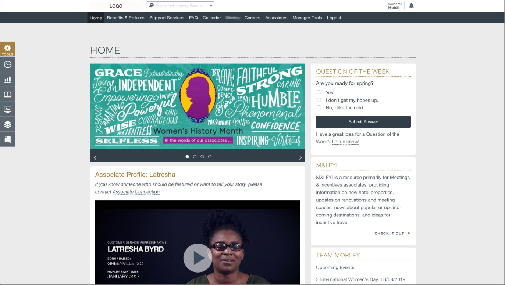
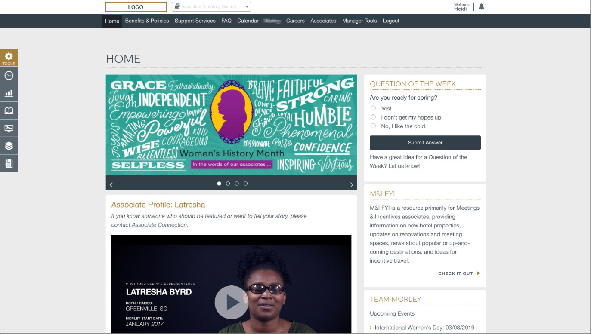
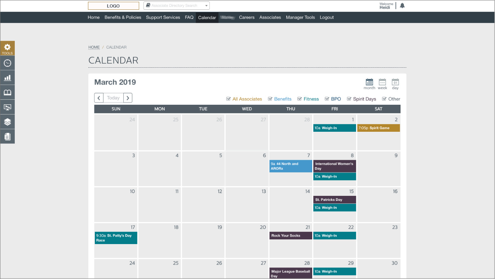
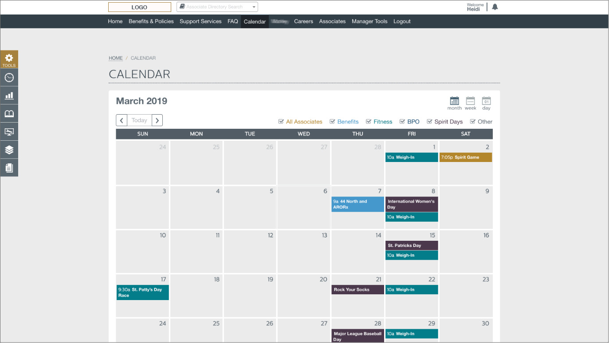

Opportunity
The company experienced tremendous growth and added multiple locations across the U.S. and needed to be able to communicate with all associates digitally.
Research & Testing
Research and planning included a deep dive into the overall feature list, resulting in 70 individual features (and considerations for each). We also produced and prioritized a 160-step preliminary action item plan. We researched, documented and discussed intranet best practices and pitfalls of current company-wide communication (largely email and internal posters and flyers).
Once the interactive wireframe was complete, we pulled in a focus group of about 20 associates from various departments with varying exposure to intranets. Using a training room equipped with computers, we guided them on how to access the wireframe. All testers were directed to find specific content and provide feedback on the layout, information architecture, ease of use, and overall experience. The feedback was used to alter the wireframe before we moved to the final mockup.
My Role
- Documented and prioritized the feature list and task plan, developed and maintained a timeline.
- Produced the wireframe and styling.
- Provided guidance and QC to the design team on the UI mockup and the development team on the functionality plan.
- Conducted project meetings to keep the team on track and purposely incorporated some fun in our meetings (because happy people produce better work, and there is nothing wrong with sharing pet pictures with each other, right?).
Outcome
As a newly-built digital team, this was the first big web project that we worked on and managed (in between our normal client projects). Having to define the process from research to UX/UI to development was a wonderful lesson and defined the process for future large projects. Developers worked late in the night on eve of the launch, but it was live on launch day and looked spectacular!
 
  
